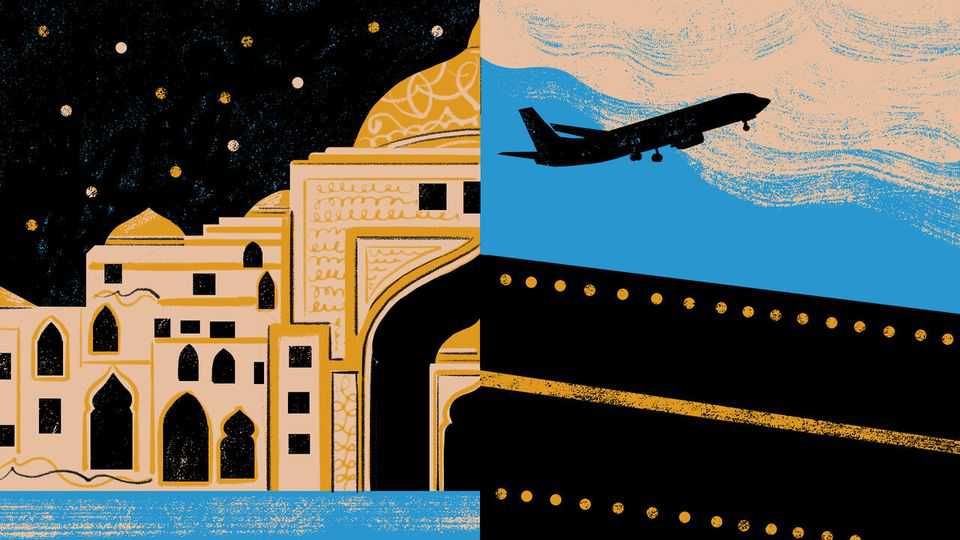

Donald Trump may love the Middle East to death
The folly of wanting a Middle East run by nationalist strongmen and made rich by global commerce

Oct 29th 2026
IF President Donald Trump loathed the Middle East, that unhappy region might be better off. Were he filled with cold disdain for Israel, Iran or the Arab monarchies of the Persian Gulf—as happened with other second-term presidents—he might by now be trying to walk away. Instead, as war clouds gather again over Iran and its neighbours, Mr Trump cannot stop meddling.
Not so long ago Middle Eastern rulers relished the attentions of the Trump clan and its patriarch. At last they had an American president who praised their iron-fisted governance and shared their transactional, show-me-the-money approach to foreign relations. Even their interior design strikes a chord with Mr Trump. “I’m seeing perfect marble. This is what they call perfecto,” swooned America’s president last year, touring the Emir of Qatar’s palace. On that same visit in May 2025, the applause from Gulf leaders was heartfelt when Mr Trump hailed the “miracle” they had collectively wrought, in a speech in the Saudi capital, Riyadh.
Seventeen months on, in such cities as Abu Dhabi, Doha and Dubai, that Riyadh speech is recalled with grief and exasperation. Officials, scholars and investors talk with fury of America’s and Israel’s war on Iran, which is wrecking the very model of modernisation that Mr Trump claims to admire.
In his Saudi address, Mr Trump paid tribute to Middle Eastern rulers for two broad achievements, reflecting his beliefs about what makes for a viable world order. First, he hailed the region for embracing national pride and for staying loyal to traditional values. Middle East rulers thrived by ignoring outsiders “giving you lectures on how to live”, enthused Mr Trump. Second, he praised the region’s absolute monarchs and leaders for their love of money. Specifically, he lauded them for seeking peace through prosperity, and for capitalising on the Gulf’s position at the crossroads of lucrative trade, shipping and aviation routes. Mr Trump described a Middle East of gleaming cities, technology companies and Formula One racetracks forging a future defined by commerce, not “the ancient conflicts and tired divisions of the past”.
Back then, before the war on Iran, the Middle East’s rise seemed to involve both of Mr Trump’s favourite ideas working as planned. It was a region of autocratic palace-builders, reaping great wealth from oilfields and gasfields beneath their feet. It was at the same time a place of bustling container ports and airports open to the globe. Such resource-rich countries as Qatar, Saudi Arabia and the United Arab Emirates were moving to diversify their economies away from oil and gas. Harnessing their cheap energy, spare land and other resources, they planned to build AI data centres and other hubs for industries of the future.
Mr Trump’s war puts all that into doubt. It has also exposed a contradiction at the heart of his vision. There is a fatal tension between his praise for unyielding nationalism as the foundation of successful societies and his hopes for a globe made peaceful by shared prosperity. For especially in the Middle East, aggressive, rule-scorning chauvinists are destroyers of peace and plenty.
Mr Trump may believe that countries asserting their self-interest is the blueprint for international stability. That is news to Gulf neighbours of Binyamin Netanyahu in Israel, of the Islamic regime in Iran or the Houthi rebels in Yemen. As seen from the Gulf, though the leaders of Israel, Iran and the Houthi rebel movement are very different political actors, a common thread links them. All are seen to seek legitimacy by appealing to narrow ideological, religious and civilisational beliefs (or ancient conflicts and tired divisions, as Mr Trump might say). All are willing to use force to defend and advance their goals.
Conflict is especially deadly for the sort of economic activity which the Gulf hopes will generate future wealth. Marble palaces can be fortified. Oilfields and gasfields can be secured by national armies backed by American firepower. But when Iranian drones or Houthi missiles close Gulf shipping lanes, smash into airports or bomb data centres, as has happened several times this year, the damage goes beyond an individual site. Middle Eastern rulers hope to attract footloose foreigners, whether they are investors, shippers, air passengers or expatriates raising families in gleaming, low-tax cities. In the Gulf, there is brave talk of installing air defences at data centres or building them underground. But airports cannot be buried. Nor can desalination plants. Attack that sort of asset too often, and business will move.
Seen from Gulf capitals, the American-Israeli war on Iran is an attack on connectivity as an economic model. A Gulf official quotes a leader sighing that if he could pick his country up and move it to Latin America, he would, but instead his homeland is 45 minutes by speedboat from Iran. Several Gulf officials are both angry with Iran for striking them, and desperate for a reset of relations with that country. They dread a deal that leaves Iran controlling the Strait of Hormuz like a protection racket. But rather than risk Iranian regime change, they would prefer an Iran engaged in global trade, so that it, too, has incentives to see arteries of commerce kept open. An argument heard often in Doha or Dubai is that the austere, fanatical Revolutionary Guards have little to lose from an endless conflict. For there to be even remote hope for the region, Iran needs political leaders who are more accountable to their people, and focused on their well-being, Gulf neighbours insist.
Though Mr Trump has little interest in accountability for leaders, he does claim to want Iran to choose a path of economic development. For now, though, his attacks have left Iranian hardliners stronger than before. Hence the gloom in the Gulf. Once, its rulers swooned as Mr Trump praised them. Now, they fear he may love their region to death. ■